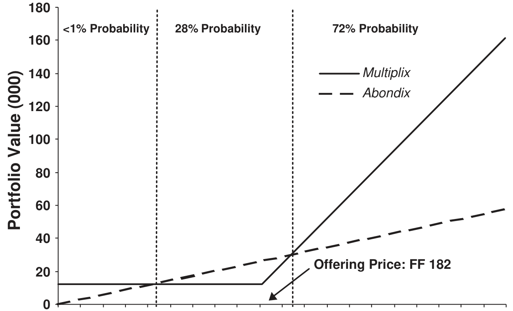
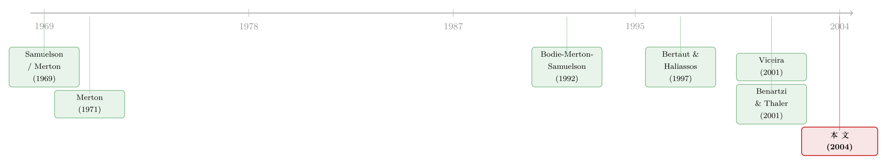

把好处摆上桌，员工却不肯伸手——法国电信的一堂行为金融公开课
本文读的是 Degeorge, Jenter, Moel & Tufano (2004, JFE)：1997 年法国电信私有化时，公司把四种带巨额折扣的股票方案摆到 20 多万名员工面前，其中一种（Multiplix）几乎是「白送的下行保护 + 十股的全部上涨」。可大量员工要么干脆不参与，要么参与了却躲开了那份最划算的资产。作者用一个标准的新古典组合选择模型去解释这些选择，发现大方向都对，但留下四个模型解释不了的「异象」——最刺眼的一个是：员工宁愿放弃相当于一到两个月工资的好处，也不愿花时间把这份要约看懂。
1 一道送分题，为什么这么多人交了白卷
先想象一个场景。
你的雇主告诉你：现在有一笔投资，你投 9000 法郎，五年后保底能拿回大约 12500 法郎（年化 6.8%），而且如果公司股价涨了，你还能拿走十股股票的全部涨幅。下行有底、上行不封顶——用金融的语言说，这是一份「保护型看跌头寸」(protected-put position)，或者等价地，一个「债券加看涨期权」(bond-plus-call) 组合。
任何一个学过期权的人都会脱口而出：这几乎是免费的午餐，闭着眼睛也该买。
可现实是，法国电信 (France Telecom) 把这道送分题摆到了 20 多万名员工面前，结果很多人交了白卷——要么根本不参与，要么参与了，却偏偏绕开了这份最值钱的资产，去买了一个明显更差的替代品。
这就是 Degeorge、Jenter、Moel 和 Tufano 这篇 2004 年发表在《金融经济学杂志》(Journal of Financial Economics) 上的论文想讲清楚的故事。它的迷人之处在于：这不是一个实验室里编出来的玩具，而是一场真实的、有 20 多万人参加的、赌注是真金白银的「自然实验」。而作者手里，恰好有一份能看到每个人是谁、买了什么、买了多少的数据库。
接着，一个自然的问题是：标准的金融理论，到底能不能解释普通人面对这种选择时的行为？ 如果能，能解释到什么程度？解释不了的那部分，又藏着什么？
2 法国电信的「难题」：怎么把股票卖给不想要的人
要理解这篇文章，得先理解 1997 年的法国电信究竟面对一个什么样的局面。
那一年，这家国有电信巨头要做部分私有化 (partial privatization)。法国法律有一条硬规定：发行总量里必须留出 10% 卖给员工。而管理层出于政治和经济两方面的考虑，特别希望员工的认购率高一点——员工踊跃买，私有化这件事在政治上才站得住脚。
但「把自家股票卖给自家员工」这件事，天生就别扭。
法国电信的员工大多是蓝领和公务员 (civil servants)——这些人本来财力有限，而且当年的法国人极少直接持有股票。文中给了一个对照数字：1997 年大约只有 500 万 法国人直接持股，占 6000 万人口的 8%；而同期美国这个比例是 19.2%。更别提选择当公务员本身，可能就意味着这群人风险偏好偏低、对私营部门兴趣不大。再加上工会一路的政治反对——这股票，是真不好卖。
那直接打折不行吗？不行。法国私有化法律把折扣封顶在 20%，你没法靠一路降价把股票塞给员工。
这里有个很关键的张力：法律既逼着公司卖股票给员工（留出 10%），又不让公司靠降价来卖（折扣封顶 20%）。于是管理层只能在「20% 折扣」这个框架之外，设计出别的花样来吊起员工的胃口。
于是法国电信端出了四道菜。零售 IPO 价是每股 FF 182，打了 20% 折扣后员工每股只付 FF 145.60。但真正的「甜头」远不止这 20%——公司还叠加了配股奖励 (matching bonus) 和免费股 (free shares)，再配上持有期要求，把四种方案拉开了梯度：
- Disponix：无持有期要求，最朴素。投 FF 9000 拿回约 FF 12000（有效折扣 25%）。
- Simplix：2 年持有期。投 FF 9000 拿回 FF 18750（折扣 52%）。
- Abondix：5 年持有期，折扣最猛的「纯打折买股」。投 FF 9000 拿回 FF 26250（折扣 66%），还放在免税退休账户里。
- Multiplix：5 年持有期，结构最特别的一个——前面说的那份「下行保护 + 十股上行」。投 FF 9000，按不同波动率假设，这个包值 FF 27000 到 FF 40000（折扣 67%–77%）。
下面这张表把四种方案的条款一次性摆清楚，最值得盯住的是最右一列「投 FF 9000 能换回多少（折扣率）」。

Table 1: are significantly higher than the corresponding values for Abondix
「越愿意锁定，给的折扣越大」——这是前三种方案的逻辑。但 Multiplix 跳出了这个逻辑：它不是「打折买股」，而是用一笔结构古怪的「担保贷款」，让员工每出一股的钱，就能拿到十股的上涨空间，同时锁死下行。作者算得很清楚：假设股票年化波动率 20%、年化预期回报 11%，五年后 Multiplix 的最终回报有 72% 的概率高于 Abondix；只有不到 1% 的概率会落在 Abondix 反超的那段狭窄区间里。换句话说，任何一个风险中性或风险厌恶的投资者，事前在合理的参数范围内，都应该选 Multiplix 而不是 Abondix——除非某些约束（比如「投入两个长期资产的钱不能超过年薪的 1/4」）正好把他卡住了。
事后看更是如此：2002 年 6 月，法国电信股价跌破 FF 70，掉进了图里最左边那段「血亏区」。可即便在这么惨的价位，一个投了 FF 9000 的 Multiplix 持有者，五年后照样能拿回 FF 12500，年化 6.8%。下行保护，真的兑现了。
3 一个标准模型，能预测什么
那么，一个理性的、追求效用最大化的员工，应该怎么反应？
作者没有去发明一个花哨的新模型，而是把 Samuelson (1969) 与 Merton (1969, 1971) 那套经典的最优消费—组合模型搬过来，做了三处针对性的扩展，专门刻画法国电信员工的处境：
- 把投资机会集扩到了雇主提供的这些「专属交易」，而不只是教科书里的无风险资产 + 风险资产；
- 显式地把持有期要求和各种约束写进去（很多约束是真的会绑住人的）；
- 把员工那份不可分散、且不确定的人力资本 (human capital) 也放进效用里——毕竟你的工资和法国电信的命运是绑在一起的。
这是一个三期、幂效用 (power utility)、带中间消费的模型。它吐出的预测，整理在文中的 Table 3 里，分三层：要不要参与、投多少、买哪种。挑几个不那么显然的说：
- 投资额：风险厌恶越高，投得越少；金融财富越多，投得越多；劳动收入（人力资本）越高也投得越多，但增速递减、而且比财富的效应弱——因为工资和股价正相关，多买股票等于在已有的人力资本风险上再加码。
- 劳动收入与股价的相关性越高，投得越少（对冲动机）。
- 买不买 Multiplix（即组合中受看跌保护的比例）：风险厌恶越高、人力资本越大、工资与股价相关性越高，越应该多买 Multiplix——因为这些人本来就暴露在公司风险下，更需要那份下行保护。
把这套预测拿去对数据，大方向全对：金融财富和工资越高的人，参与率越高、投得越多；年纪越大的人参与率越低（临近退休、风险厌恶上升，这一点和生命周期组合选择的经典直觉一致，关于这条直觉可参见《年纪越大，越该把钱从股票里挪出来吗？》）。
到这里，故事似乎平平无奇：新古典模型又赢了一局。
但真正关键的一步在于，作者紧接着指出了四个模型怎么也圆不上的「异象」。这才是全文的肉。
4 模型解释不了的四件事
异象一：人力资本几乎「不起作用」。
理论说得很重：你的人力资本越是和雇主绑定（firm-specific），你越不该再去买雇主的股票。作者用任职年限 (tenure)——衡量人力资本「公司专属程度」的标准代理变量——去检验。结果是：确实能找到一点这个方向的效应，但量级小到几乎可以忽略。理论里那个本该举足轻重的对冲动机，在真实数据里轻飘飘的。
异象二：「要不要参与」和「投多少」，是被两股不同的力量驱动的。
这是全文最聪明的发现。标准模型里，参与和投资额应该由同一组因素同向决定。可数据里出现了一个拧巴的模式：有几类员工——尤其是离职员工和退休人员——参与率明显更低，可一旦他们决定参与，反而投得更多。
低参与率 + 高条件投资额，这两件事放在一起，标准模型解释不了，但有一个简单的「补丁」能解释：存在某种搜寻或分析成本 (search or analysis cost)，是一道必须先跨过去的门槛。只有当你打算投的金额足够大、大到值得你花时间去搞懂这份要约时，你才会参与；否则干脆不动。
作者用一个潜变量框架 (latent variable framework) 把这道门槛估了出来：除非员工本来就打算投至少 FF 18750（约 $3,160），否则他们根本不参与。
异象三：员工把相当于一到两个月工资的好处「留在了桌上」。
这是异象二的直接后果，也是最让人唏嘘的一句话。这些没参与的人，并不是算过账之后觉得不划算——而是懒得算。他们宁愿放弃相当于一到两个月工资的实打实的好处，也不愿花那点时间把要约读懂。
而反过来的证据更有说服力：在那些公司通过营销和现场支持主动帮员工降低这道「理解成本」的地方，参与率显著更高。这等于从正反两面把同一件事钉死了——门槛是真实存在的，而且营销/咨询能把它压低。这篇文章某种意义上，是在给「投资决策中的营销与建议」标了一个价。
（这条「参与不是因为不愿担风险，而是因为嫌麻烦」的逻辑，和后来一系列把「风险厌恶」与「参与成本」拆开来量的工作一脉相承，可参见《94% 的人其实都想买股票——把「风险厌恶」和「麻烦」分开来量》，以及《「不买股票」也能是理性的吗？——给参与成本算一笔最省的账》。）
异象四：参与了的人，大多躲开了最值钱的那份资产。
前面算过，Multiplix 在几乎任何合理假设下都该被优先选。可大量参与者偏偏绕开它，去买了 Abondix 这种「纯打折买股」。最划算的下行保护，被系统性地低配了。
为什么会这样？文章的语气是克制的——它没有一口咬定是哪种行为偏误。但读者很难不联想到：Multiplix 的结构太复杂了（一笔靠扣留股息和税收抵免来还的「担保贷款」，到期还款额还是股价的函数），复杂本身就是一道劝退的墙；而 Abondix「打 66% 折买股票」这种说法，对普通人直观得多。复杂，是有代价的。
5 把 Multiplix 拆开：它到底是什么
既然 Multiplix 是全文的「主角」，值得把它的经济结构单独拆给你看——这也是这篇偏实证的论文里，唯一带着定价味道的地方。
法律上，Multiplix 是这么实现的：员工每用个人资金买一股，公司就借给他钱再买九股，凑成十股。这笔「贷款」很古怪——它靠扣留五年里的股息和税收抵免来偿还，到期时的还款额是法国电信股价的函数；而且员工永远不需要偿还超过他持有股票的价值。最后这一条，正是下行保护的来源：你最差也就是「股票全归你、贷款一笔勾销」，亏不到自己的本金以下。
把这些条款翻译成现金流，Multiplix 到期的收益结构，正如文中所说，等价于一个「债券 + 看涨期权」：
其中 \(\Pi_T\) 是五年到期时员工拿到的总价值，\(S_T\) 是届时的法国电信股价。这个分解的妙处在于：下行由那个固定的保底部分 \(B\) 兜住——无论股价跌成什么样，员工至少拿回 \(B\)；上行则由十份看涨期权敞开——股价涨得越高，员工赚得越多。等价地，你也可以把它看成「持有十股 + 一份看跌期权」的保护型头寸：
$$\Pi_T \;=\; 10\,S_T \;+\; 10 \cdot \max\!\big(X - S_T,\; 0\big)$$
这就是为什么文中反复强调它「下行受保护」(downside protected)。作者正是用 Black-Scholes 公式给这个包估值，并在 Table 1 最后一列报出它的风险中性价值显著高于 Abondix。
注意：这篇论文完整的三期组合选择模型放在「可向作者索取的 Appendix B」里，正文并未给出闭式方程。上面这个收益分解是论文正文用文字明确描述的结构（「bond-plus-call portfolio or alternatively a protected-put position」），不是我替它编的模型。读者若想看完整的效用最大化推导，需去找原文附录。
6 文献脉络
把这篇文章放回它所在的那条河里，会看得更清楚。
源头是最优组合选择的经典理论：Samuelson (1969) 和 Merton (1969, 1971) 奠定了跨期消费—组合的分析框架。但这套理论一开始是「无摩擦、可分散」的理想世界。
接着，一个自然的问题是：现实里的人，手上还攥着一份卖不掉的「人力资本」，这会怎样改变他的投资？ 于是有了 Bodie、Merton 和 Samuelson (1992) 把劳动供给的灵活性写进生命周期模型，有了 Bertaut 和 Haliassos (1995, 1997) 追问「为什么这么少人持股」并引入预防性动机，有了 Guiso、Jappelli 和 Terlizzese (1996) 把收入风险和借贷约束塞进组合选择，也有了 Viceira (2001) 系统刻画不可交易劳动收入下的最优持股。这条线越走越「接地气」。

与此同时，另一条偏行为/实证的支流在涨水：Benartzi (2000) 发现 401(k) 账户里员工过度持有自家公司股票，Benartzi 和 Thaler (2001) 记录了「天真的分散化」——把钱平摊到几个选项了事。这些工作都在说：真实的人，并不像模型里那样优化。
然后，这篇文章的位置就清楚了：它站在两条支流的交汇处。一方面，它用一个扩展过的新古典模型去严肃地检验理论预测（这是组合选择那一脉的做法）；另一方面，它手握 20 多万人的真实选择，诚实地报告了模型解释不了的四个异象（这是行为/实证那一脉的关切）。它最大的贡献，不是证明谁对谁错，而是用一个干净、大样本、高赌注的真实场景，把「参与成本/分析成本」这件事量化了出来——FF 18750 的门槛、一到两个月工资的弃权。
这条对「参与成本」的关注，一直延伸到后来对退休计划、默认选项、追涨行为的研究中（比如《钱追着「去年的收益」跑：401(k) 里 83% 的人都在「认错了树」》），也呼应着「员工持股到底是激励还是筛选」的讨论（参见《员工人手一份期权：到底是激励，还是一场「双向筛选」？》）。
7 评论与延伸（Q&A + 研究方向）
(a) 几个可能的疑问
Q：所谓「门槛效应」，会不会只是穷人没钱投，被错当成了行为偏误？
这是最该担心的混淆，作者也正是用它来识别的。关键证据不是「穷人少投」（那符合标准模型），而是离职员工和退休人员参与率低、可一旦参与反而投得多这种「拧巴」的模式——纯粹的财富/收入故事预测两者同向，解释不了这个拐点。再加上「营销/现场支持能显著抬高参与率」这条正面证据，把它指向了一道可被降低的固定成本，而非单纯的预算约束。
Q：员工躲开 Multiplix，会不会其实是理性的——比如他们就是强烈看涨，预期股价正好落在 Abondix 反超的那段区间？
理论上成立，但量级上很难。作者算过，那段「Abondix 反超」的区间极窄，五年后股价落进去的概率不到 1%；要靠这个理由选 Abondix，需要一种相当极端且自信的价格预期。更现实的解释是 Multiplix 的结构太复杂，复杂本身劝退了人。
Q：这是一次性的私有化事件，结论能外推到别的情境吗？
外部效度确实要打折——法国电信员工以蓝领和公务员为主、当年法国直接持股率仅 8%，是一个「金融素养偏低」的特殊样本。但这恰恰是它的价值所在：在一个低素养、高赌注的真实场景里，参与成本的效应被放得很大、看得很清。把它当成「参与成本能有多大」的一个上界证据，比当成普适弹性更稳妥。
Q：人力资本效应「几乎为零」，会不会是 tenure 这个代理变量太糙了？
很可能。任职年限只是「人力资本公司专属程度」的一个粗糙代理，它同时还和年龄、风险偏好、财富纠缠在一起，真实的对冲动机可能被测量误差冲淡了。所以更稳的读法是「用 tenure 这把尺子量不出显著的人力资本效应」，而不是断言对冲动机不存在。
Q：这篇文章到底算「支持」还是「反对」新古典模型？
两边都沾。它诚实地说大方向（财富、收入、年龄）都被模型预测对了——这是支持；但它也指出了四个量级上重要、模型圆不上的异象——这是反对。它的态度更像「标准模型是个不错的一阶近似，但要解释真实的个体选择，必须给它加上参与成本/分析成本这块补丁」。
Q：FF 18750 这个门槛是怎么估出来的，可信吗？
它来自一个潜变量（latent variable）模型：把「打算投的金额」当作一个连续的潜变量，只有当它超过某个阈值时才会被观测到「参与」。这类带截断的估计对分布假设（如正态性）是敏感的，所以那个具体数字应看成一个量级而非精确值；但「门槛显著为正、且不小」这个定性结论，由参与/投资额的拧巴模式独立支撑，相对稳健。
(b) 几个可能的研究问题与提案
1. 把「参与成本」搬到公司债的散户/零售端。 【经济故事】法国电信的核心教训是：哪怕好处摆在桌上，理解成本也能挡住一大批人。公司债市场对散户而言，信息和分析成本只会更高（票息结构、赎回条款、信用评级都不直观）。零售投资者在公司债一级/二级市场的「参与门槛」有多高？营销与披露简化能不能像法国电信案例里那样显著抬高参与？ 【可行性】中。需要带个人特征的零售持仓数据（如某券商或某债券发行的零售认购明细），识别上可借鉴本文的「参与 vs. 投资额」拧巴模式，或利用披露规则/营销力度的外生变化做准实验。难点在拿到带身份特征的微观数据。
2. 复杂度本身的「劝退价」。 【经济故事】员工系统性低配了结构更复杂但更划算的 Multiplix。如果能找到同一群投资者面对「简单但略差」与「复杂但更优」两类产品的场景，就能直接估出「复杂度溢价」——人们愿意为「看得懂」放弃多少回报。 【可行性】高（若有合适数据）。可在企业 DC 退休计划、结构性理财产品、或带不同复杂度选项的员工持股计划中找设定。识别靠产品复杂度的横截面/时序变化，控制住真实收益差。doable，关键是找到复杂度可量化、收益可比的产品菜单。
3. 外资持有人在「难懂」资产上的参与劣势。 【经济故事】本文讲的是本地员工面对本地要约都嫌麻烦；那么跨境投资者面对一国结构性证券（如带本地法律特征的可转债、含权债）时，理解成本是否构成更高的参与门槛，进而压低外资在这类资产上的占比？这能把「参与成本」与「外资持有偏好」两条线接起来。 【可行性】中。需要按投资者国籍拆分的持仓数据（如各国央行/监管的证券层面持有数据），用资产复杂度做横截面变量。识别可比较「简单债 vs. 含权债」上外资占比的差异。数据可得性是主要约束。
4. 营销/咨询投入的因果回报。 【经济故事】本文已给出相关性证据：营销支持高的地方参与率高。但营销投入是内生的（公司可能专挑好卖的地方加码）。能不能找到营销/现场咨询的外生分配（如随机试点、预算冲击、地理断点），干净地估出「每多花一块钱营销，多撬动多少参与与投资」？ 【可行性】中到高。可与金融机构合作做现场实验（参与成本干预），或利用分支机构/区域的营销资源外生变动。这是把本文「营销有价」结论升级为因果估计的自然下一步。
8 我的判断
这篇文章的贡献，不在模型有多新（它的模型是经典框架的直接扩展，完整推导甚至放在了正文之外的附录里），而在于它把一个抽象概念落地成了一个可以触摸的数字。「投资决策里有参与成本/分析成本」这句话，理论家说了很多年；但能拿出一个 20 多万人、真金白银、高赌注的场景，估出「FF 18750 的门槛」「一到两个月工资的弃权」「营销能显著抬高参与」，这种把概念量化并赋予经济意义的工作，价值很高，也很难复制——这样的自然实验可遇不可求。
对识别，我有两点保留。其一，FF 18750 这个阈值来自带截断的潜变量模型，对分布假设敏感，应被当作量级而非精确点估计；好在「门槛为正且不小」这一定性结论，由「参与—投资额」的拧巴模式独立支撑，不全靠那个数字。其二，「营销提高参与」是相关性而非干净的因果——营销投放大概率是内生的，公司可能本就往好卖的地方加码，这会高估营销的真实效应。这正是上面研究提案 4 想补的洞。
后续我最想看到的，是把这套「参与成本」的丈量术从一次性私有化，搬到反复发生、可重复观测的场景里去——退休计划的逐年缴费、零售债券的逐次发行——并用外生的营销/披露变化把因果钉死。法国电信给了我们一张极清晰的快照；下一步，是把快照拍成连续的影像。
参考文献
- Benartzi, S. (2000). Excessive extrapolation and the allocation of 401(k) accounts to company stock. Working Paper, UCLA.
- Benartzi, S., Thaler, R. H. (2001). Naive diversification strategies in defined contribution saving plans. American Economic Review 91, 79–98.
- Bertaut, C. C., Haliassos, M. (1995). Why do so few hold stocks? Economic Journal 105, 1110–1129.
- Bertaut, C. C., Haliassos, M. (1997). Precautionary portfolio behavior from a life-cycle perspective. Journal of Economic Dynamics and Control 21, 1511–1542.
- Bodie, Z., Merton, R. C., Samuelson, W. F. (1992). Labor supply flexibility and portfolio choice in a life cycle model. Journal of Economic Dynamics and Control 16, 427–449.
- Collat, D., Tufano, P. (1994). The Privatization of Rhône-Poulenc. Harvard Business School Case 295-049.
- Degeorge, F., Jenter, D., Moel, A., Tufano, P. (2004). Selling company shares to reluctant employees: France Telecom's experience. Journal of Financial Economics 71(1), 169–202.
- Guiso, L., Jappelli, T., Terlizzese, D. (1996). Income risk, borrowing constraints, and portfolio choice. American Economic Review 86, 158–172.
- Merton, R. C. (1969). Lifetime portfolio selection under uncertainty: the continuous-time case. Review of Economics and Statistics 51, 247–257.
- Merton, R. C. (1971). Optimum consumption and portfolio rules in a continuous-time model. Journal of Economic Theory 3, 373–413.
- Meulbroek, L. K. (2001). The efficiency of equity-linked compensation: understanding the full cost of awarding executive stock options. Financial Management 30, 5–44.
- Samuelson, P. A. (1969). Lifetime portfolio selection by dynamic stochastic programming. Review of Economics and Statistics 51, 239–246.
- Viceira, L. M. (2001). Optimal portfolio choice for long-horizon investors with nontradable labor income. Journal of Finance 56, 433–470.